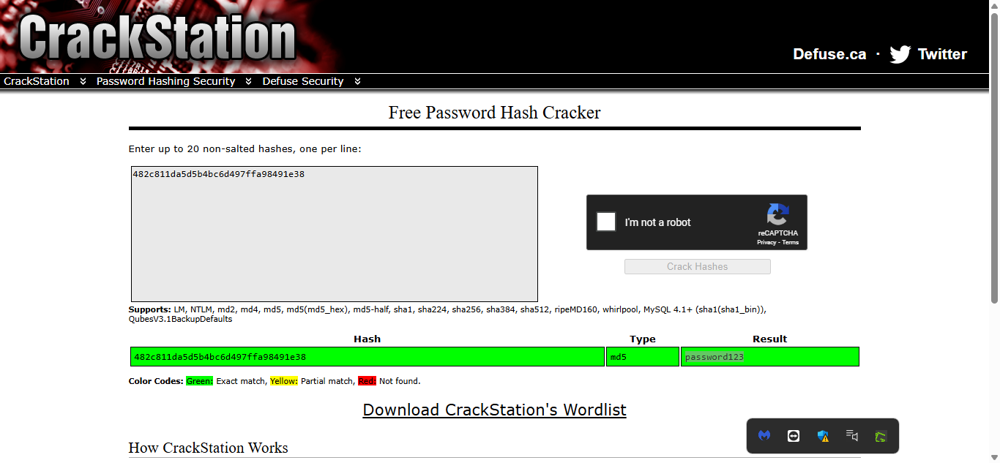

PicoCTF 2025 – Cryptography Challenge Write-up
Challenge Overview
In this challenge, I was provided with a netcat command to connect to a remote server. Upon connection, I received a series of hashed passwords and was required to crack them to retrieve the original plaintext values. The challenge tested my understanding of hashing algorithms and the importance of strong passwords.

Connecting to the Challenge
I used the provided Netcat (nc) command to establish a connection with the challenge server:

Once connected, I was given a MD5 hash to crack.
Cracking the MD5 Hash
The first hash I received was an MD5 hash. Since MD5 is a weak hashing algorithm and vulnerable to dictionary attacks, I used CrackStation—an online hash-cracking tool.
I copied the hash, pasted it into CrackStation, and obtained the plaintext password:

I submitted this password, and the challenge provided me with a second hash—this time, a SHA-1 hash.
Cracking the SHA-1 Hash
Similar to the previous step, I copied the SHA-1 hash and used CrackStation to decrypt it. The tool successfully provided the next password, which I submitted to the server.


Cracking the SHA-256 Hash
After successfully cracking the SHA-1 hash, I was given a third hash—this time, a SHA-256 hash. I repeated the same process by pasting it into CrackStation, and the result was:


I submitted this final password, and upon success, I received the flag!

Flag:picoCTF{UseStr0nG_h@shEs_&PaSswDs!_869e658e}